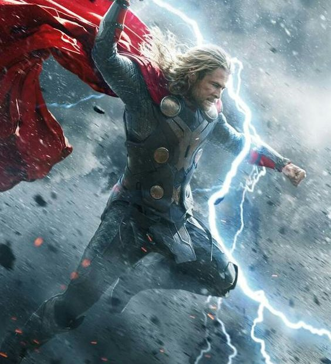
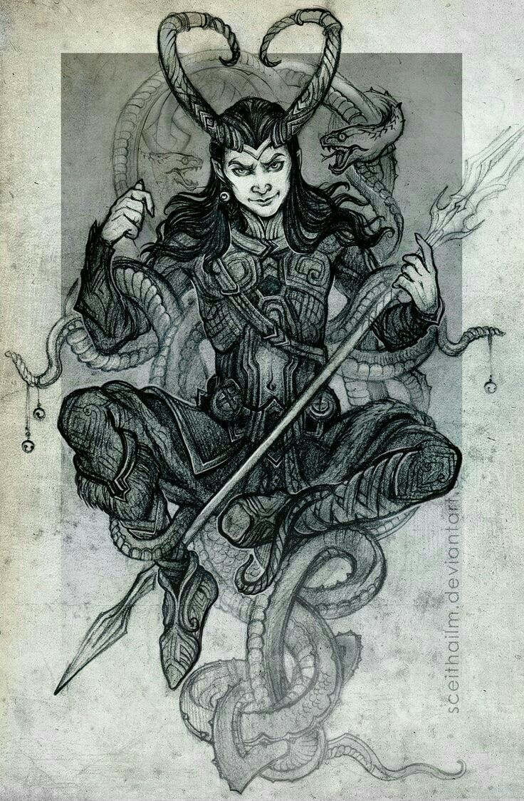

Odin o Deus dos Deuses
Odin o Deus dos Deuses

Odin ou Ódin é considerado o deus principal do clã dos deuses Æsir, o clã mais
importante da mitologia nórdica e nas crenças das religiões neopagãs germânicas. Também é conhecido como
"Pai de Todos" e "O enviado do Senhor da Guerra".
Seu papel, como o de muitos deuses nórdicos, era complexo; era o deus da sabedoria, da guerra e da morte,
embora também, em menor escala, da magia, da poesia, da profecia, da vitória e da caça.
Odin morava em Asgard, no palácio de Valaskjálf, que ele construiu para si, e onde se encontra seu trono, o
Hliðskjálf, onde podia observar o que acontecia em cada um dos nove mundos, graças aos seus dois corvos
Hugin e Munin. Durante o combate brandia sua lança, chamada Gungnir, e montava seu cavalo de oito patas,
chamado Sleipnir.
Era filho de Borr e da gigante Bestla, irmão de Vili e Vé, esposo de Frigg e pai de vários dos deuses
Æsir, tais como Thor, Balder, Vidar e Vali. E Pai adotivo de Loki.
Thor senhor das tempestades

Thor (filho de Odin e Frigga) foi o deus nórdico do trovão (por isto representava a
força da
natureza). Ele tinha um martelo chamado Mjolnir, feito por anões das cavernas subterrâneas, com o qual
dominava o trovão. Cada vez que Thor lançava seu martelo, a fim de desferir seu poderoso golpe, este voltava
para sua mão como um bumerangue. Além disso, Thor também tinha um cinturão mágico (Megingjord) que duplicava
sua força.
Thor era corpulento, tinha cabelos e barba ruivos, olhos vermelhos e, embora a inteligência não fosse um de
seus maiores dons, estava sempre disposto a ajudar seus amigos. Sua missão era manter a salvo, e em ordem, o
mundo dos deuses e dos humanos, combatendo os gigantes e no ragnarok a propria Jörmungand.
Desde pequeno Thor destacou-se por seu grande tamanho e força (era o mais forte entre os homens e deuses),
por isso sua mãe, incapaz de controlá-lo, o enviava pra longe de sua casa, e confiava seus cuidados a
Vingnir (o alado) e a Hlora (calor). Estes pais adotivos, que também eram considerados a personificação dos
relâmpagos difusos, rapidamente conseguiram controlá-lo e o criaram tão sabiamente que os deuses guardaram
uma doce lembrança de seus amáveis serviços.
Thor viajava num carro que era puxado por dois carneiros mágicos , cujos dentes e cascos soltavam grandes
faíscas. Estes tinham a peculiaridade de que Thor podia cozinhá-los e, em seguida, caso precisasse continuar
viagem, cobria os ossos com o couro dos animais e utilizava o poder regenerador do seu martelo para
trazê-los novamente à vida.
Seus filhos são Modi e Magni.
Loki o deus das travessuras

Loki é metade deus e metade jotun (gigante), filho de Farbanti e Laufey. É o deus do fogo, da
trapaça e da travessura, está também relacionado à magia, podendo assumir forma que quiser. Ele não faz
parte dos Aesir (o clã de deuses que residem em Asgard), apesar de viver ali. É geralmente visto como um
grande símbolo da maldade e da trapaça, e, embora suas artimanhas geralmente causem problemas a curto prazo
aos deuses, estes frequentemente se beneficiam com elas no fim. É notadamente uma das figuras mais
profundas, representativas e complexas da Mitologia Nórdica.
Ele domina um majestoso conhecimento em estratégia, usando suas habilidades para interesses próprios,
fabricando e elaborando intrigas e densar mentiras. Por ser um mestiço entre deus e jotun, a sua relação com
os outros deuses é bastante problemática. Segundo as lendas nórdicas, Loki liderará um exército durante os
eventos da Ragnarok. Loki é muito respeitado por Thor, tendo ajudado-o a recuperar o seu martelo mágico
Mjölnir, que fora roubado por gigantes.
As atitudes de Loki mostram sempre o seu lado maléfico e degenerado, mas geralmente ele está a buscar algo
de bom, apesar de irem contra os seus objetivos originais. Apesar das suas ações, Loki não é considerado um
deus perigoso. Os outros deuses sempre fazem uso da sua criatividade quando estão a enfrentar problemas
potencialmente sem solução ou esperança. Muitos estudiosos afirmam que essa visão de um deus demoníaco e
destrutivo é exclusivo da perspectiva cristã. Apesar do seu lado corrompido, Loki é um os personagens que
acabam se tornando grandes aliados dos deuses. Além disso, a imagem de Loki representa o "caos necessário"
para a busca do progresso. Princípios cristãos introduzidos na Escandinávia acabaram por destacar apenas o
de mais maldoso nas características de Loki. Embora já muitos estudos tenham sido feitos sobre a figura
desse deus, a sua história ainda é considerada bastante obscura. Não há traço religioso algum na etimologia
do seu nome.
Pouco depois de seu nascimento, Loki foi abandonado e deixado para morrer. Encontrado pelo rei Odin, ele foi
levado para Asgard e criado por Odin e sua esposa, Frigga, como um príncipe asgardiano, junto com seu filho
biológico Thor.
Seus filhos são Jörmundgander, Fenrir e Hel.